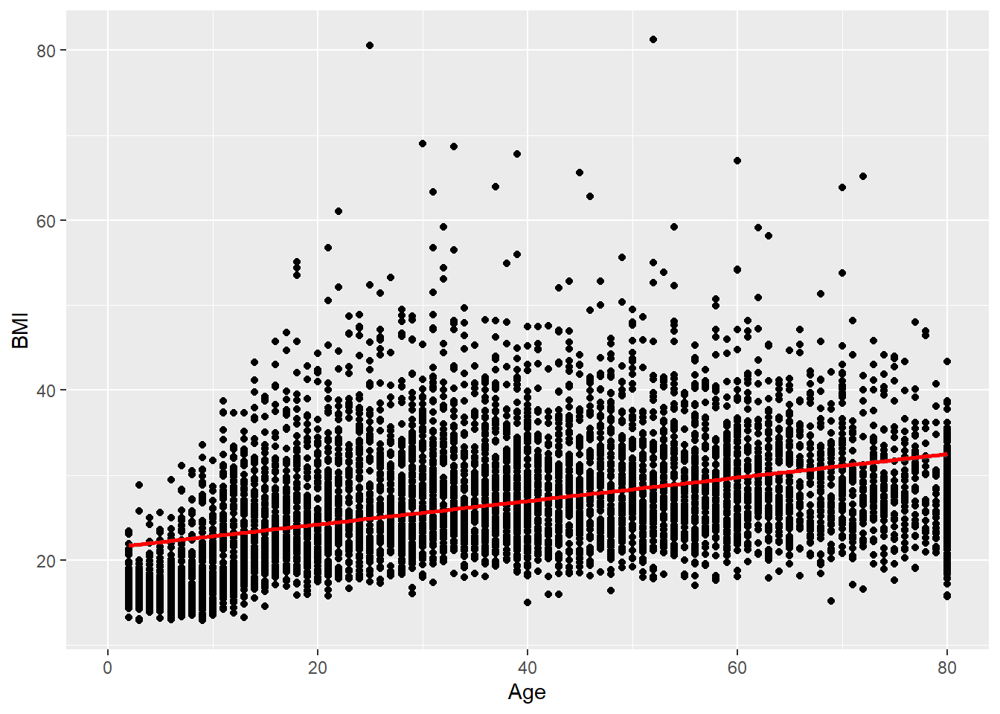
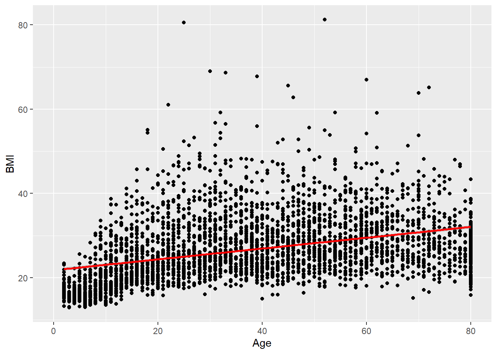

library(tidyverse)10 Fonctions, conditions et boucles
10.1 Fonctions
Nous allons voir comment définir des fonctions en R. Depuis le début, nous avons utilisé de nombreuses fonctions qui sont existantes en R de base ou qui ont été définies dans des packages. Mais il est aussi possible de créer nos propres fonctions.
Définir des fonctions permettra souvent d’automatiser du code et d’éviter de nombreux copier-coller.
La syntaxe pour écrire une fonction est la suivante :
\[ \textit{f <- function(arg1, arg2, ...)}\{\newline
\text{code de la fonction}\}\] Par exemple, on va écrire une fonction qui pour chaque élément d’un vecteur renvoie le carré
fct_carre <- function(vec){
# Argument : un vercteur
# Sortie : Un vecteur dont chaque entrée est le carré du vecteur passé en argument
return(vec^2)
}
fct_carre(c(1,2,3,4,5))[1] 1 4 9 16 25On précise l’objet de sortie de la fonction avec la fonction return().
Remarque : Si on ne met pas de return(), la fonction renverra le dernier objet modifié, mais il est préférable, surtout quand la fonction est longue de préciser bien préciser l’objet de sortie avec return()
fct_carre2 <- function(vec){
# Argument : un vercteur
# Sortie : Un vecteur dont chaque entrée est le carré du vecteur passé en argument
vec^2
}
fct_carre2(c(1,2,3,4,5))[1] 1 4 9 16 25Une fonction peut prendre autant d’arguments que l’on veut. Il est aussi possible de définir des valeurs par défaut pour tous ou certains d’entre eux. Cela évite à l’utilisateur de préciser tous les arguments si certains prennent souvent une certaine valeur.
Pour cela, on définira d’abord les arguments qui n’ont pas de valeur par défaut et ensuite ceux dont on précise une valeur par défaut avec “=”. \[ \textit{function}\text{(arg1, arg2, arg3=valeur_def_arg3, arg4 = valeur_def_arg4)}\{\}\] Par exemple, on va définir une fonction qui renvoie un certain exposant d’un vecteur. Par défaut l’exposant sera “2”, mais on peut choisir celui que l’on veut
fct_exposant <- function(vec, exposant = 2){
return(vec^exposant)
}Ainsi, si je ne précise que mon vecteur en argument de la fonction, j’obtiens son carré
fct_exposant(c(1,2,3,4,5))[1] 1 4 9 16 25Mais si je précise l’argument exposant = 3, j’obtiens son cube
fct_exposant(c(1,2,3,4,5), 3)[1] 1 8 27 64 125Remarque : Comme pour les fonctions prédéfinies, on n’est pas obligé de préciser les noms des arguments si on les rentre dans l’ordre dans lequel ils sont définis, mais on peut le faire et ainsi les rentrer dans l’ordre que l’on souhaite
fct_exposant(exposant = 3, vec = c(1,2,3,4,5))[1] 1 8 27 64 125Remarque 2 : Les arguments par défaut sont utilisés dans de nombreuses fonctions que l’on utilise régulièrement. On peut les voir dans les aides des fonctions.
10.2 Conditions
Nous utilisons souvent des tests conditionnels pour affecter une certaine valeur à un objet selon ses caractéristiques.
10.2.1 Rappel des fonctions ifelse() et case_when()
Nous avons déjà vu les fonctions ifelse() et case_when().
ifelse() permet d’attribuer une valeur ou une autre selon qu’une condition est vérifiée ou non \[\textit{ifelse }(\text{ condition, valeur si vérifiée, valeur si non vérifiée})\]
x <- 3
ifelse(x>=5, "Grand", "Petit")[1] "Petit"case_when() est utilisée pour généraliser le ifelse à plusieurs tests conditionnels \[\textit{case_when }(\text{condition1 ~ valeur si cond1 vérifiée,}\newline \text{condition2 ~ valeur si condition 2 vérifiée,} \newline \cdot \cdot \cdot \text{,} \newline \text{TRUE ~ valeur si aucune des condition précédentes n'est vérifiée})\]
x <- 3
dplyr::case_when(x<0 ~ "Négatif",
x==0 ~ "Nul",
x>0 & x<=5 ~ "]0,5]",
x<=10 ~ "]5, 10]",
T ~ "Sup 10")[1] "]0,5]"Rappel : Les conditions sont évaluées dans l’ordre d’apparition, donc la condition 4 est testée que si 1, 2 et 3 sont fausses, c’est pourquoi je n’ai pas à tester “x>5 & x<=10”. De même, dans ma troisième condition, je pourrais supprimer le test “x>0”
10.2.2 Les conditions if, else if et else
Les fonctions précédentes sont très utile si on veut attribuer une valeur fixe, mais si on veut faire des opération plus complexes selon qu’une condition est vérifiée ou non, ces fonctions ne sont plus adaptées.
Dans ce cas, on va avoir recours aux conditions if, else if et else.
Pour débuter un test conditionnel et tester une première condition on utilise if \[\textit{if}\text{ (condition1)\{taitement a effectuer si cond1 est vraie\}}\] Ensuite, pour continuer le même test conditionnel mais tester une autre condition, on utilise else if \[\textit{else if}\text{ (condition2)\{taitement a effectuer si cond 2 est vraie mais pas cond 1\}} \newline
\textit{else if}\text{ (condition3)\{taitement a effectuer si cond 3 est vraie mais pas cond 1 ni cond 2\}} \newline \cdot \cdot \cdot \]
Pour finir un test conditionnel, et ainsi effectué le traitement défini dans le cas ou aucune des conditions précédentes n’est vérifiée, on utilise else \[\textit{else}\text{\{traitement à effectuer si aucune des conditions n'est vérifiée\}}\]
choix = c("mixed", "female", "male")
selection <- choix[1]
library(NHANES)
data("NHANES")
plot_BMI_age <- function(selection){
if(!(selection%in%choix)){
print("Erreur : vous devez selectionner un élément parmi les éléments du vecteur choix")
}
else if(selection=="mixed"){
ggplot(NHANES, aes(x = Age, y = BMI))+
geom_point()+
geom_smooth(method = "lm", col = "red")
}
else{
dat <- filter(NHANES, Gender==selection)
ggplot(dat, aes(x = Age, y = BMI))+
geom_point() +
geom_smooth(method = "lm", col = "red")
}
}
plot_BMI_age(selection)`geom_smooth()` using formula = 'y ~ x'Warning: Removed 366 rows containing non-finite outside the scale range
(`stat_smooth()`).Warning: Removed 366 rows containing missing values or values outside the scale range
(`geom_point()`).
plot_BMI_age(choix[2])`geom_smooth()` using formula = 'y ~ x'Warning: Removed 179 rows containing non-finite outside the scale range
(`stat_smooth()`).Warning: Removed 179 rows containing missing values or values outside the scale range
(`geom_point()`).
10.3 Boucles
Dans les fonctions, il sera souvent nécéssaire d’utiliser des boucles. Celles-ci peuvent aussi être utilisées en dehors de fonction, mais c’est plus rare
Il existe deux types de boucles : for et while. En pratique, l’utilisation des boucles while est découragée car elle peut résulter sur une boucle infinie.
10.3.1 Boucles while
Comme son nom l’indique, une boucle while permet d’executer un code tant qu’une condtion est remplie .
\[ While (Conditions)\text{\{code à exécuter tant que la condition est remplie\}} \]
Par exemple, imaginons un sac de 9 boules bleues et 1 boule rouge. Je pioche une boule et tant que je pioche une boule bleue, je continue de piocher une boule. en algorithmique on peut ecrire cela domme ceci :
Initialisation
Pioche une Boule
La variable Boule prend la valeur de la boule piochée
Boucle
Tant que Boule == ‘Bleue’
Pioche une boule
La variable Boule prend la valeur de la boule piochée
Fin de tant que
Attention aux boucles infinie !
Par sa construction, si la condition est toujours vraie alors la boucle ne s’arrêtera pas. Il faut donc s’assurer que la condition peut bien etre remplie dans le code à exécuter. Si je n’ai pas de boule rouge dans mon sac et que je lance la boucle alors je piocherai des boules à l’infinie.
Exemple simple dans R :
#Initialisation
x <- 0
i <- 0
while(x < 100){ # Tant que x est plus petit que 100
x <- x+10
i <- i +1
}
x[1] 100i # nombre d'iteration[1] 10Exemple plus concret mais qui dans les faits ne se fait pas comme ça :
Créer une colone Overweigth qui prend la valeur True si BMI > 25.
i <- 1 # Indice des lignes
Overweight <- rep(NA, nrow(NHANES))
while (i <= nrow(NHANES)){ #Tant que i est inferieur ou égal au nombre de ligne
if(is.na(NHANES$BMI_WHO[i])) {}
else if(NHANES$BMI_WHO[i] %in% c("25.0_to_29.9", "30.0_plus")) {
Overweight[i] <- TRUE
}
else{
Overweight[i] <- FALSE
}
i <- i+1 # On passe à la ligne suivante
}
print(Overweight[(nrow(NHANES)-10):nrow(NHANES)]) [1] FALSE FALSE TRUE TRUE TRUE TRUE TRUE NA TRUE TRUE TRUE10.3.2 Boucles for
Les boucles for permettent d’itérer sur plusieurs éléments d’un vecteur ou d’une list.
\[\textit{for (i = 1:10)}\text{\{code à exécuter sur chaque i allant de 1 à 10\}}\]Cette méthode est utilisé lorsque l’on travaille avec les indexations.
On peut également itérer directement sur les éléments d’un vecteur \[ \textit{for (x in } \text{ c(14,25,64,13))\{code à exécuter sur chaque élément du vecteur c(14,25,64,13) \}}\]
Exemple on affiche le rythme cardiaque moyen par catégorie d’IMC dans le dataset NHANES
BMIcat <- levels(NHANES$BMI_WHO)
for(x in BMIcat){
data <- NHANES %>% filter(BMI_WHO==x)
meanPulse <- mean(data$Pulse, na.rm = T)
print(paste("Mean pulse of people with BMI in", x, ":", meanPulse))
}[1] "Mean pulse of people with BMI in 12.0_18.5 : 79.4790528233151"
[1] "Mean pulse of people with BMI in 18.5_to_24.9 : 73.5532544378698"
[1] "Mean pulse of people with BMI in 25.0_to_29.9 : 71.4819749216301"
[1] "Mean pulse of people with BMI in 30.0_plus : 74.3102930127723"Parfois on préfère travailler avec les indexations
Exemple : On crée un vecteur Overweight qui indique si la personne est un sur-poids ou en obésité avec des booléen TRUE FALSE.
Au départ on ne sait pas quelles valeurs va prendre le vecteur, on initialise un vecteur de taille le nombre d’individus dans NHANES avec que des NA, puis pour chaque individu, on regarde sa catégorie de BMI et on met à jour l’entrée correspondant à l’individu dans le vecteur Overweight
Overweight <- rep(NA, nrow(NHANES))
for (i in 1:nrow(NHANES)){
if(is.na(NHANES$BMI_WHO[i])) {}
else if(NHANES$BMI_WHO[i] %in% c("25.0_to_29.9", "30.0_plus")) {
Overweight[i] <- TRUE
}
else{
Overweight[i] <- FALSE
}
}
print(Overweight[1:100]) [1] TRUE TRUE TRUE FALSE TRUE FALSE FALSE TRUE TRUE TRUE FALSE FALSE
[13] TRUE FALSE TRUE TRUE TRUE TRUE TRUE FALSE FALSE FALSE FALSE TRUE
[25] TRUE TRUE FALSE TRUE TRUE TRUE TRUE FALSE TRUE TRUE TRUE TRUE
[37] TRUE FALSE FALSE FALSE TRUE TRUE TRUE TRUE TRUE FALSE TRUE FALSE
[49] TRUE TRUE TRUE FALSE FALSE TRUE TRUE FALSE FALSE TRUE TRUE TRUE
[61] NA FALSE TRUE TRUE TRUE TRUE TRUE TRUE FALSE FALSE FALSE TRUE
[73] TRUE FALSE TRUE TRUE TRUE TRUE TRUE FALSE FALSE FALSE TRUE TRUE
[85] TRUE TRUE TRUE TRUE TRUE TRUE TRUE FALSE TRUE FALSE TRUE FALSE
[97] FALSE FALSE FALSE FALSENHANES <- NHANES %>%
mutate(Overweight = case_when(is.na(BMI_WHO) ~ NA,
NHANES$BMI_WHO %in% c("25.0_to_29.9", "30.0_plus") ~ T,
T ~ F))10.4 Les fonctions apply
En R, il est souvent recommendé d’utilisé les fonctions apply plutôt que de faire des boucles for. Ces fonctions sont plus optimales et permettent donc de réduire le temps de calcul.
Il existe 5 fonctions apply : apply(), lapply(), sapply(), mapply() et tapply()
Ces fonctions diffère dans le type d’objet qu’elles prennent en argument, et qu’elles retournent, mais leur principe est le même. Elles prennent en argument un objet sur lequel itérer et une fonction qui est la fonction à effectuer sur chaque élément de l’objet.
- lapply() : s’utilise pour une list ou un vecteur et retourne une list - sapply() : s’utilise pour pour une list ou un vecteur et retourne un vecteur - apply() : s’utilse pour une matrice ou un dataset, et retourne un vecteur - mapply() : prend en premier argument une fonction, puis autant de vecteurs que nécessaire - tapply() :
10.4.1 lapply() et sapply()
Ces fonctions s’utilsent lorsque l’on veut appliquer une fonction à chaque élément d’une list ou d’un vecteur \[\textit{sapply}\text{(vecteur, nom de la fonction, éventuellement autres arguments de la fonction)}\] La fonction peut soit être une fonction définie en R ou une fonction que l’on a préalablement définie.
Si la fonction prend d’autres argument qu’un élément de vecteur, on les précise après la virgule du nom de la fonction, dans un vecteur s’il y en a plusieurs
Exemple : on refait le calcul du vecteur Overweight obtenu dans l’exemple de la boucle for, qui indique si une personne est en surpoids ou obésité ou non
fct_overweight <- function(x){
if (is.na(x)) NA
else if (x %in% c("25.0_to_29.9", "30.0_plus")) {
TRUE
}
else{
FALSE
}
}
#sapply on otient un vecteur
Overweight_apply <- sapply(NHANES$BMI_WHO, fct_overweight)
print(Overweight_apply[1:100]) [1] TRUE TRUE TRUE FALSE TRUE FALSE FALSE TRUE TRUE TRUE FALSE FALSE
[13] TRUE FALSE TRUE TRUE TRUE TRUE TRUE FALSE FALSE FALSE FALSE TRUE
[25] TRUE TRUE FALSE TRUE TRUE TRUE TRUE FALSE TRUE TRUE TRUE TRUE
[37] TRUE FALSE FALSE FALSE TRUE TRUE TRUE TRUE TRUE FALSE TRUE FALSE
[49] TRUE TRUE TRUE FALSE FALSE TRUE TRUE FALSE FALSE TRUE TRUE TRUE
[61] NA FALSE TRUE TRUE TRUE TRUE TRUE TRUE FALSE FALSE FALSE TRUE
[73] TRUE FALSE TRUE TRUE TRUE TRUE TRUE FALSE FALSE FALSE TRUE TRUE
[85] TRUE TRUE TRUE TRUE TRUE TRUE TRUE FALSE TRUE FALSE TRUE FALSE
[97] FALSE FALSE FALSE FALSEidentical(Overweight, Overweight_apply) # Vérification que c'est le même vecteur que celui avec la boucle for[1] TRUE#lapply on obtient une list
Overweight_lapply <- lapply(NHANES$BMI_WHO, fct_overweight)
print(Overweight_lapply[1:10])[[1]]
[1] TRUE
[[2]]
[1] TRUE
[[3]]
[1] TRUE
[[4]]
[1] FALSE
[[5]]
[1] TRUE
[[6]]
[1] FALSE
[[7]]
[1] FALSE
[[8]]
[1] TRUE
[[9]]
[1] TRUE
[[10]]
[1] TRUEExemple en ajoutant un argument fixe à une fonction : on veut calculer l’IMC moyen du dataset en ignorant les données manquantes. On doit donc rajouter l’argument na.rm=T de la fonction mean()
meanBMI <- lapply(NHANES$BMI, mean, na.rm=T)
print(meanBMI[1:10])[[1]]
[1] 32.22
[[2]]
[1] 32.22
[[3]]
[1] 32.22
[[4]]
[1] 15.3
[[5]]
[1] 30.57
[[6]]
[1] 16.82
[[7]]
[1] 20.64
[[8]]
[1] 27.24
[[9]]
[1] 27.24
[[10]]
[1] 27.2410.4.2 apply()
La fonction apply() prend au moins 3 arguments : un dataset ou une matrice, puis MARGIN = 1 ou 2 et enfin la fonction à itérer.
L’argument MARGIN permet de spécifier si on veut appliquer la fonction à chaque ligne (MARGIN = 1) ou à chaque colonne (MARGIN = 2)
Pour l’exemple, nous allons travailler sur le sous-ensemble de données qui contient les variables sur la pression artérielle.
data <- NHANES %>% select(starts_with("BP"))
head(data)# A tibble: 6 × 8
BPSysAve BPDiaAve BPSys1 BPDia1 BPSys2 BPDia2 BPSys3 BPDia3
<int> <int> <int> <int> <int> <int> <int> <int>
1 113 85 114 88 114 88 112 82
2 113 85 114 88 114 88 112 82
3 113 85 114 88 114 88 112 82
4 NA NA NA NA NA NA NA NA
5 112 75 118 82 108 74 116 76
6 86 47 84 50 84 50 88 44Pour chaque individu, calcul de la moyenne des mesures de pression artérielle
mean_rows <- apply(data, MARGIN = 1, mean, na.rm=T)
print(mean_rows[1:100]) [1] 99.5000 99.5000 99.5000 NaN 95.1250 66.6250 74.0000 89.2500
[9] 89.2500 89.2500 88.7500 89.7500 109.8750 85.5000 105.0000 104.2500
[17] 76.2500 101.6667 126.0000 100.0000 82.5000 82.5000 104.6250 66.8750
[25] 66.8750 116.0000 72.3750 98.8750 115.7500 115.7500 99.3750 92.6250
[33] 74.2500 74.2500 107.7500 85.0000 85.0000 81.0000 90.8750 90.8750
[41] 103.8750 103.8750 103.8750 103.8750 80.2500 81.2500 86.5000 94.7500
[49] 95.8750 91.3750 91.3750 75.5000 75.5000 114.6250 70.0000 96.5000
[57] NaN 114.7500 114.7500 114.7500 NaN 73.0000 93.8750 92.2500
[65] 92.2500 98.1250 98.1250 98.1250 58.6250 NaN NaN 97.6250
[73] 97.6250 84.7500 NaN 83.6250 83.6250 83.6250 96.8750 99.7500
[81] 99.7500 99.7500 89.2500 89.2500 89.2500 89.2500 81.2500 81.2500
[89] 87.8750 129.2500 129.2500 97.1250 102.2500 91.6250 113.6250 98.2500
[97] 86.1250 NaN 80.0000 88.6250Pour chaque mesure de pression artérielle, calcul de la moyenne de tous les individus
mean_cols <- apply(data, MARGIN = 2, mean, na.rm=T)
print(mean_cols) BPSysAve BPDiaAve BPSys1 BPDia1 BPSys2 BPDia2 BPSys3 BPDia3
118.15495 67.48006 119.09020 68.27826 118.47576 67.66455 117.92923 67.29874 10.4.3 mapply()
La fonction mapply() permet d’appliquer une fonction qui prend plusieurs vecteurs en arguments à des vecteurs que l’on spécifie.
La fonction mapply() fonctionne dans l’ordre inverse : son premier argument est la fonction à itérer, puis on peut mettre autant de vecteurs que d’arguments de la fonction. Le premier vecteur est considéré comme étant le premier argument de la fonction, le deuxième vecteur le deuxième argument, etc…
a <- c(80, 65, 89, 23, 21)
b <- c(10, 30, 8, 75, 70)
c <- c(10,5, 3, 2, 9)
mapply(sum, a, b, c)[1] 100 100 100 100 100Autre exemple de mapply : calculer l’IMC à partir des données du poids et de la taille
imc <- mapply(function(x,y) round(x/(y/100)^2, 2), NHANES$Weight, NHANES$Height) # round permet d'arrondir le résultat
print(imc[1:100]) [1] 32.22 32.22 32.22 15.30 30.57 16.82 20.64 27.24 27.24 27.24 23.67 23.69
[13] 26.03 19.20 26.22 26.60 27.40 28.54 25.84 24.74 19.73 19.73 20.66 36.32
[25] 36.32 35.84 24.32 25.95 31.43 31.43 27.18 21.00 25.79 25.79 29.13 30.60
[37] 30.60 23.34 22.85 22.85 26.46 26.46 26.46 26.46 25.45 21.16 46.69 20.15
[49] 27.06 37.33 37.33 15.59 15.59 25.54 24.98 22.63 14.35 37.92 37.92 37.92
[61] NA 18.16 25.52 28.96 28.96 32.49 32.49 32.49 18.35 16.24 16.24 28.48
[73] 28.48 19.41 36.28 25.87 25.87 25.87 28.60 21.03 21.03 21.03 30.90 30.90
[85] 30.90 30.90 31.51 31.51 27.74 27.25 27.25 24.53 29.83 22.81 29.27 17.87
[97] 20.39 15.18 17.24 18.62print(NHANES$BMI[1:100]) [1] 32.22 32.22 32.22 15.30 30.57 16.82 20.64 27.24 27.24 27.24 23.67 23.69
[13] 26.03 19.20 26.22 26.60 27.40 28.54 25.84 24.74 19.73 19.73 20.66 36.32
[25] 36.32 35.84 24.32 25.95 31.43 31.43 27.18 21.00 25.79 25.79 29.13 30.60
[37] 30.60 23.34 22.85 22.85 26.46 26.46 26.46 26.46 25.45 21.16 46.69 20.15
[49] 27.06 37.33 37.33 15.59 15.59 25.54 24.98 22.63 14.35 37.92 37.92 37.92
[61] NA 18.16 25.52 28.96 28.96 32.49 32.49 32.49 18.35 16.24 16.24 28.48
[73] 28.48 19.41 36.28 25.87 25.87 25.87 28.60 21.03 21.03 21.03 30.90 30.90
[85] 30.90 30.90 31.51 31.51 27.74 27.25 27.25 24.53 29.83 22.81 29.27 17.87
[97] 20.39 15.18 17.24 18.62imc[1:100]==NHANES$BMI[1:100] [1] TRUE TRUE TRUE TRUE TRUE TRUE TRUE TRUE TRUE TRUE TRUE TRUE TRUE TRUE TRUE
[16] TRUE TRUE TRUE TRUE TRUE TRUE TRUE TRUE TRUE TRUE TRUE TRUE TRUE TRUE TRUE
[31] TRUE TRUE TRUE TRUE TRUE TRUE TRUE TRUE TRUE TRUE TRUE TRUE TRUE TRUE TRUE
[46] TRUE TRUE TRUE TRUE TRUE TRUE TRUE TRUE TRUE TRUE TRUE TRUE TRUE TRUE TRUE
[61] NA TRUE TRUE TRUE TRUE TRUE TRUE TRUE TRUE TRUE TRUE TRUE TRUE TRUE TRUE
[76] TRUE TRUE TRUE TRUE TRUE TRUE TRUE TRUE TRUE TRUE TRUE TRUE TRUE TRUE TRUE
[91] TRUE TRUE TRUE TRUE TRUE TRUE TRUE TRUE TRUE TRUE10.4.4 tapply()
La fonction tapply() permet d’appliquer une fonction sur un vecteur par groupes définis par les catégories d’un autre vecteur.
Le premier argument est le vecteur de données sur lequel appliquer la fonction. Le deuxième argument est le vecteur qui définit à quel groupe appartient chaque élément du vecteur passé en premier argument. Le troisième argument est la fonction à appliquer. Le deuxième vecteur est donc un vecteur de class facteur \[ tapply(\text{vecteur, vecteur de class facteur, fonction})\]
Par exemple, on peut vouloir calculer le rythme cardiaque moyen dans chaque catégorie d’IMC
tapply(NHANES$Pulse, NHANES$BMI_WHO, mean, na.rm=T) 12.0_18.5 18.5_to_24.9 25.0_to_29.9 30.0_plus
79.47905 73.55325 71.48197 74.31029 Autre exemple : déterminer la proportion de personnes ayant du diabètes en fonction du niveau de santé général perçu
tapply(NHANES$Diabetes=="Yes", NHANES$HealthGen, mean, na.rm=T) Excellent Vgood Good Fair Poor
0.03530752 0.04434678 0.10013532 0.19801980 0.39037433 Remarque : pour calculer la proportion, on utilise NHANES$Diabetes==“Yes” qui crée un vecteur TRUE FALSE en fonction de si la réponse est “Yes”, puis on calule la moyenne de TRUE
10.5 Exercices
Exercice 1 : Obtenir un barplot pour chaque variable catégorielle de NHANES
Indication : a) créer une fonction pour obtenir le barplot
b) Créer un vecteur des noms de colonnes de classe facteur dans NHANES (avec une fonction apply)
c) Utiliser une fonction apply pour obtenir un graphique pour chaque variable
Exercice 2 : Obtenir pour chaque variable catégorielle de NHANES, le tableau du nombre d’individus dans chaque catégorie, y compris les NA
Exercice 3 : Obtenir un barplot qui indique la santé perçu pour chacun des niveau de revenu en utilisant la fonction tapply()
Exercice 4 : Obtenir le niveau moyen de cholesterol total par niveau d’éducation